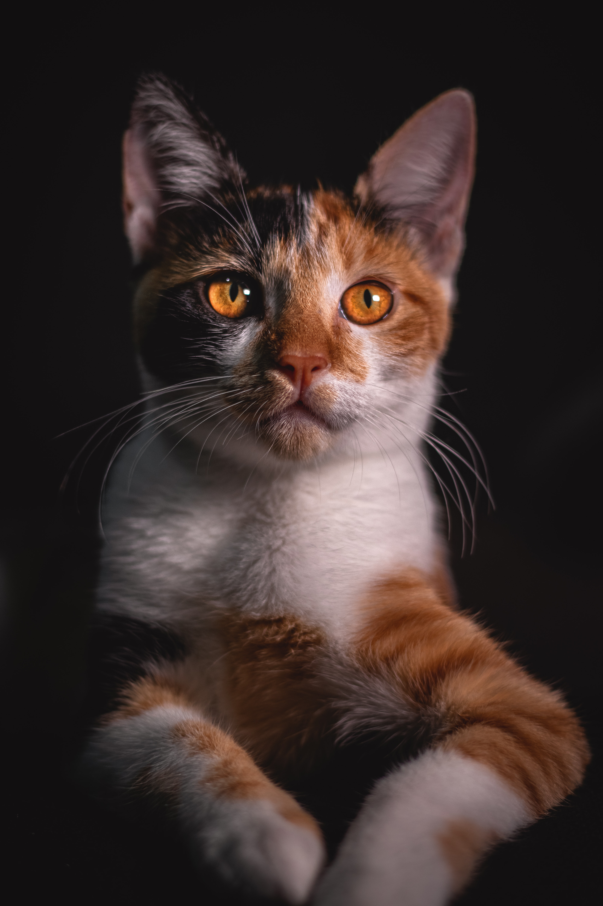

Some random facts

As kittens they have 26 deciduous, or “baby”, teeth. As adult cats they have 30 permanent teeth. Don’t forget to take care of those pearly whites with regular dental cleanings.

House cats share 95.6% of their genetic makeup with tigers. You read that right, TIGERS. They also share some of the same behavior habits such as scent and urine marking, prey stalking and pouncing.

Cats can jump 5 times their own height. Now that’s impressive!

A housecat can run to the speed of about 30 mph over short distances. This means that a cat can outrun superstar runner Usain Bolt in a 200 meter dash!